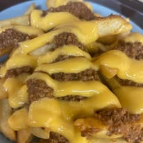

Family. Food. Tradition.
A Newport News Classic
Gus's Hot Dog King began with one man’s dream. After migrating from Greece in 1968, Gus opened his first hot dog stand in Newport News on April 1, 1972. What started small eventually grew into a full sit-in diner and a local favorite known for hot dogs “all the way,” chili cheese fries, southern-style barbecue, and family hospitality.
After Gus’s passing in 1994, his wife Stavroula continued the business and helped preserve his name and legacy. In 2003, their son George returned home after graduating from George Mason University to help carry the family business forward.

What We Stand For
Made With Pride
Family Legacy
A family business built through decades of dedication, sacrifice, and care.
Local Flavor
Classic diner favorites made for the Newport News community.
Real Hospitality
Friendly service, familiar faces, and food that feels like home.
Our History
The Gus's Hot Dog King Timeline
A family story that began with a dream and grew into a Newport News tradition.
Gus's Journey Begins
In 1968, a man by the name of Gus migrated from Greece in search of a dream.
The First Hot Dog Stand
On April 1, 1972, Gus opened his first hot dog stand in Newport News, VA, which later grew into a full sit-in diner.
A Destination for All
Throughout the years, people from all over have traveled miles to have a hot dog “all the way,” mouth-watering chili cheese fries, and our southern-style barbecue.
After Gus's Passing
After the passing of Gus back in 1994, his wife Stavroula took over the business and later added his name to the title.
The Next Generation
In 2003, her son, George, returned home after graduating from George Mason University to help his mother with the family business.
Come Hungry
Visit Gus's Hot Dog King Today
Stop by for a classic hot dog, crispy fries, burgers, barbecue, and a taste of Newport News history.
Explore the Menu